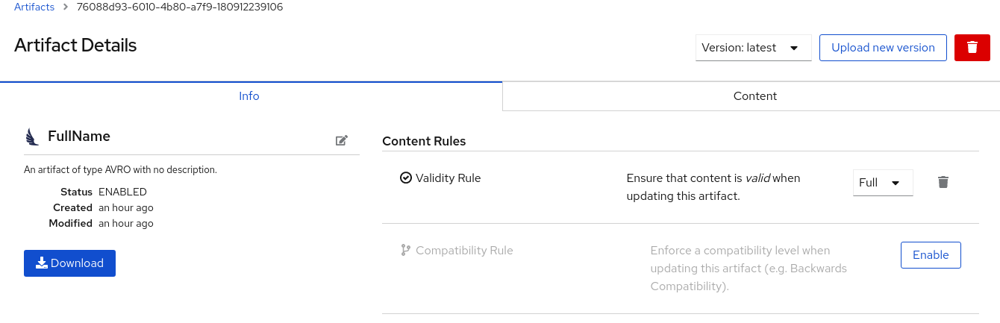
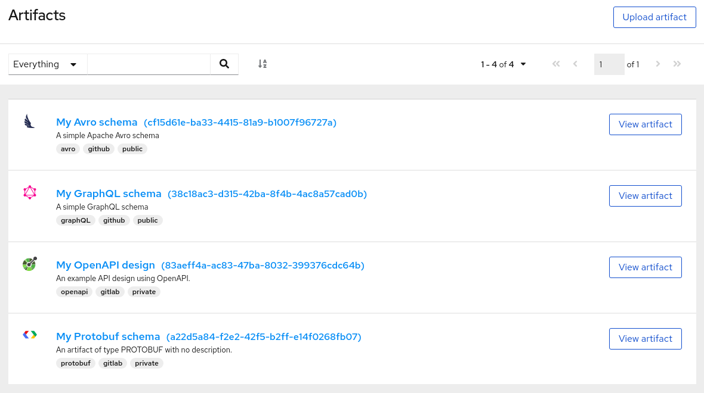
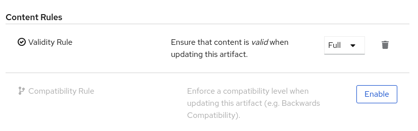

Managing Apicurio Registry content using the web console
This chapter explains how to manage artifacts stored in the registry using the Apicurio Registry web console. This includes uploading and browsing registry content, and configuring optional rules:
Adding artifacts using the Apicurio Registry web console
You can use the Apicurio Registry web console to upload event schema and API design artifacts to the registry. For more details on the artifact types that you can upload, see [registry-artifact-types]. This section shows simple examples of uploading Apicurio Registry artifacts, applying artifact rules, and adding new artifact versions.
-
Apicurio Registry must be installed and running in your environment.
-
Connect to the Apicurio Registry web console on:
http://MY_REGISTRY_URL/ui -
Click Upload Artifact, and specify the following:
-
ID: Use the default empty setting to automatically generate an ID, or enter a specific artifact ID.
-
Type: Use the default Auto-Detect setting to automatically detect the artifact type, or select the artifact type from the drop-down, for example, Avro Schema or OpenAPI.
The Apicurio Registry server cannot automatically detect the JSON Schema artifact type. You must manually select this artifact type. -
Artifact: Drag and drop or click Browse to upload a file, for example,
my-schema.jsonormy-openapi.json.
-
-
Click Upload and view the Artifact Details:
Figure 1. Artifact Details in Apicurio Registry web console-
Info: Displays the artifact name, description, lifecycle status, when created, and last modified. You can click the Edit Artifact Metadata pencil icon to edit the artifact name and description or add labels, and click Download to download the artifact file locally. Also displays artifact Content Rules that you can enable and configure.
-
Documentation (OpenAPI only): Displays automatically-generated REST API documentation.
-
Content: Displays a read-only view of the full artifact content.
-
-
In Content Rules, click Enable to configure a Validity Rule or Compatibility Rule, and select the appropriate rule configuration from the drop-down. For more details, see [registry-rule-types].
-
Click Upload new version to add a new artifact version, and drag and drop or click Browse to upload the file, for example,
my-schema.jsonormy-openapi.json. -
To delete an artifact, click the trash icon next to Upload new version.
Deleting an artifact deletes the artifact and all of its versions, and cannot be undone. Artifact versions are immutable and cannot be deleted individually.
Viewing artifacts using the Apicurio Registry web console
You can use the Apicurio Registry web console to browse the event schema and API design artifacts stored in the registry. This section shows simple examples of viewing Apicurio Registry artifacts, versions, and artifact rules. For more details on the artifact types stored in the registry, see [registry-artifact-types].
-
Apicurio Registry must be installed and running in your environment.
-
Artifacts must have been added to the registry using the Apicurio Registry web console, REST API commands, Maven plug-in, or a Java client application.
-
Connect to the Apicurio Registry web console on:
http://MY_REGISTRY_URL/ui -
Browse the list of artifacts stored in the registry, or enter a search string to find an artifact. You can select to search by a specific Name, Description, Label, or Everything.
Figure 2. Browse artifacts in Apicurio Registry web console -
Click View artifact to view the Artifact Details:
-
Info: Displays the artifact name, description, lifecycle status, when created, and last modified. You can click the Edit Artifact Metadata pencil icon to edit the artifact name and description or add labels, and click Download to download the artifact file locally. Also displays artifact Content Rules that you can enable and configure.
-
Documentation (OpenAPI only): Displays automatically-generated REST API documentation.
-
Content: Displays a read-only view of the full artifact content.
-
-
Select to view a different artifact Version from the drop-down, if additional versions have been added.
Configuring content rules using the Apicurio Registry web console
You can use the Apicurio Registry web console to configure optional rules to prevent invalid content from being added to the registry. All configured artifact rules or global rules must pass before a new artifact version can be uploaded to the registry. Configured artifact rules override any configured global rules. For more details, see [registry-rules].
This section shows a simple example of configuring global and artifact rules. For details on the different rule types and associated configuration settings that you can select, see [registry-rule-types].
-
Apicurio Registry must be installed and running in your environment.
-
For artifact rules, artifacts must have been added to the registry using the Apicurio Registry web console, REST API commands, Maven plug-in, or a Java client application.
-
Connect to the Apicurio Registry web console on:
http://MY_REGISTRY_URL/ui -
For artifact rules, browse the list of artifacts stored in the registry, or enter a search string to find an artifact. You can select to search by a specific artifact Name, Description, Label, or Everything.
-
Click View artifact to view the Artifact Details.
-
In Content Rules, click Enable to configure an artifact Validity Rule or Compatibility Rule, and select the appropriate rule configuration from the drop-down. For more details, see [registry-rule-types].
Figure 3. Configure content rules in Apicurio Registry web console -
For global rules, click the Settings cog icon at the top right of the toolbar, and click Enable to configure a global Validity Rule or Compatibility Rule, and select the appropriate rule configuration from the drop-down. For more details, see [registry-rule-types].
-
To disable an artifact rule or global rule, click the trash icon next to the rule.